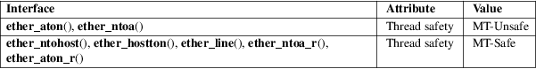

ether_aton, ether_ntoa, ether_ntohost, ether_hostton, ether_line, ether_ntoa_r, ether_aton_r − Ethernet address manipulation routines
Standard C library (libc, −lc)
#include <netinet/ether.h>
char
*ether_ntoa(const struct ether_addr *addr);
struct ether_addr *ether_aton(const char
*asc);
int
ether_ntohost(char *hostname, const struct
ether_addr *addr);
int ether_hostton(const char *hostname, struct
ether_addr *addr);
int
ether_line(const char *line, struct ether_addr
*addr,
char *hostname);
/* GNU
extensions */
char *ether_ntoa_r(const struct ether_addr
*addr, char *buf);
struct
ether_addr *ether_aton_r(const char *asc,
struct ether_addr *addr);
ether_aton() converts the 48-bit Ethernet host address asc from the standard hex-digits-and-colons notation into binary data in network byte order and returns a pointer to it in a statically allocated buffer, which subsequent calls will overwrite. ether_aton() returns NULL if the address is invalid.
The ether_ntoa() function converts the Ethernet host address addr given in network byte order to a string in standard hex-digits-and-colons notation, omitting leading zeros. The string is returned in a statically allocated buffer, which subsequent calls will overwrite.
The ether_ntohost() function maps an Ethernet address to the corresponding hostname in /etc/ethers and returns nonzero if it cannot be found.
The ether_hostton() function maps a hostname to the corresponding Ethernet address in /etc/ethers and returns nonzero if it cannot be found.
The ether_line() function parses a line in /etc/ethers format (ethernet address followed by whitespace followed by hostname; '#' introduces a comment) and returns an address and hostname pair, or nonzero if it cannot be parsed. The buffer pointed to by hostname must be sufficiently long, for example, have the same length as line.
The functions ether_ntoa_r() and ether_aton_r() are reentrant thread-safe versions of ether_ntoa() and ether_aton() respectively, and do not use static buffers.
The structure ether_addr is defined in <net/ethernet.h> as:
struct
ether_addr {
uint8_t ether_addr_octet[6];
}
For an explanation of the terms used in this section, see attributes(7).

None.
4.3BSD, SunOS.
In glibc 2.2.5 and earlier, the implementation of ether_line() is broken.
ethers(5)